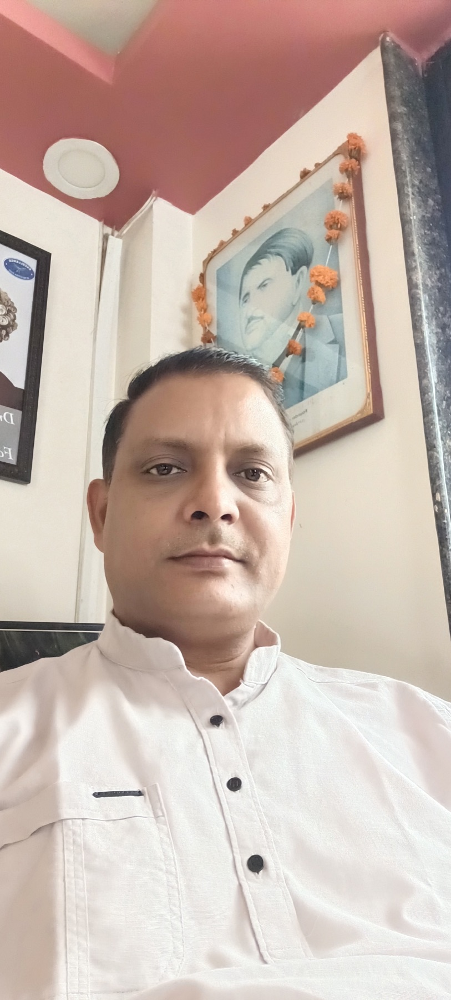

ABOUT THE CENTRE · 01
A neighbourhood
practice with a
personal touch.
Dixit Homoeo Centre serves the Budhi and Balaghat community. The clinic listing identifies Dr. Virendra Dixit and notes 24 years of healthcare service.

THE WAY WE WELCOME YOU
Every visit starts
with you.
Good care makes room for questions, context and an honest conversation. At Dixit Homoeo Centre, patients can discuss what brings them in and ask the clinic about suitable next steps.
For information about your specific concern, medicines or availability, please contact the clinic before visiting.
24years of care listed
4.9★Justdial rating
BudhiBalaghat, MP
NEAR WATER TANK ROAD